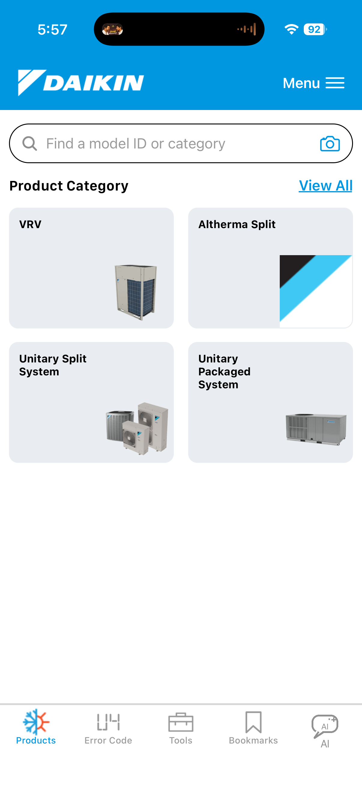
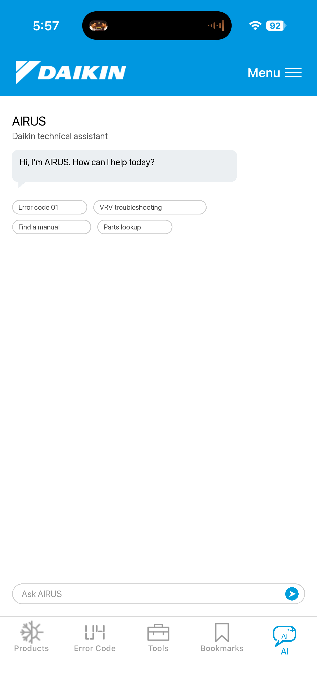

Generated by Daikin Technical Assistant
Key points
How was this answer?


Powered by AIRUS
Generated by Daikin Technical Assistant
How was this answer?
Daikin Technical Assistant
Center the equipment nameplate in the frame.
Nameplate read successfully
Model RXYQ12TAYDU • Serial 9K118042 • Product VRV outdoor unit
Suggested actions
What is VRV?
VRV intelligently uses one outdoor unit to deliver a precise amount of refrigerant to each indoor unit at a time.
Based on field conditions, VRV varies compressor and refrigerant output instead of sending a fixed amount to every zone.
What is VRV? - Outdoor Unit Technology